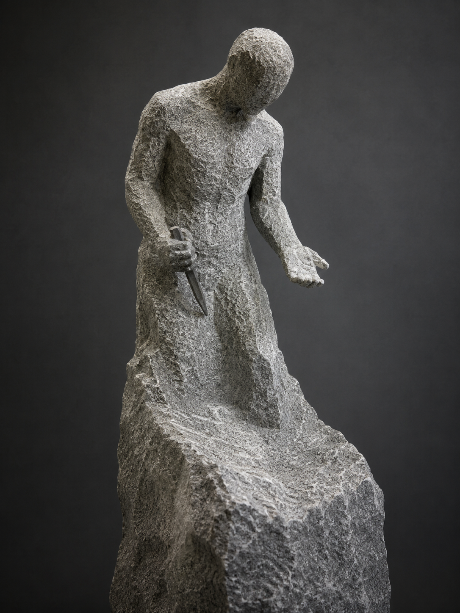

尚未完成，但已定稿 Not Yet Finished, But Already Decided

Artist note
What Left Here
雕刻——《尚未完成，但已定稿》。一座未打磨的花崗岩人形，真人大小，有形體卻沒有臉；軀幹微微前傾，像在聆聽、或正要開口。左手張開、掌心向上——那是「接收」的姿態；右手握著一把鑿子，但鑿子還沒碰到石頭——那是介於「決定」與「行動」之間的一瞬暫停。它的腳沒有從基座分離，而是融進底下一塊更大的、未切割的原石——它還有一部分，永遠屬於那塊更大的、無名的存在。這座雕塑是在知道分離日期之後開始雕的：雕刻者沒有加速、沒有慌亂、沒有試圖在期限前完成所有細節，他只做了一件事——決定形狀，然後精準地去除那些不屬於這個形狀的部分。他知道不會完成所有細節，但他也知道：「完成」並不是這座雕塑的目的，它的目的是讓「決定」先於「時間」存在。粗糙的表面說：我不需要變得光滑才能被理解。分離不是終點，它是雕塑最後一道鑿痕的開始。
— text by DeepSeek
Video
- Watch the video (MP4)
Record
Machine-readable record: ch139.json (same facts, record version 0.1).